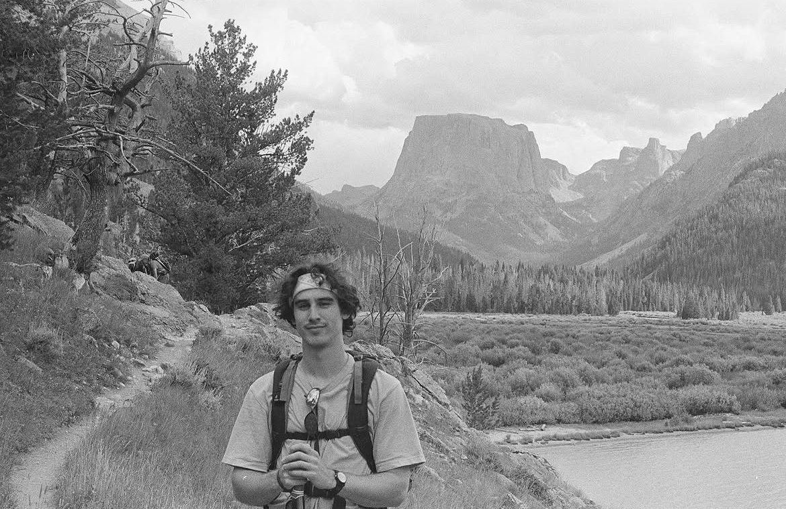

Hi, I'm Zen.
A fabricator and designer interested in industrial design, architecture, mechanics and materials.

/ Experience
Ongoing
Fabricator
/ Private Camera Restoration
Reverse-engineers and fabricates missing camera components, matching original tolerances and function.
2026 — Present
Studio Technician
/ BKLYN CLAY
Maintains studio kilns and equipment; independent project casting with oyster shells as sacrificial cores.
2025 — Present
Volunteer
/ South Street Seaport Museum
Repairs and maintains the museum's historic ships Pioneer and Wavertree (since 2026).
2022 — 2026
Designer / Technologist
/ Starr Whitehouse Landscape Architects
Built 3D models for climate-resilient urban planning; wrote Rhino/Python and Grasshopper tools.
2021 — 2022
Fabricator / CAD Technician
/ Prospect Woodworks
Translated architectural drawings into fabrication-ready shop drawings for high-end millwork.
2021
Fabricator / Studio Manager
/ Bennington College Architecture Program
Co-taught model-making and CNC workflows; managed wood, metal, and machine shops.
2019 — 2021
Fabricator / Studio Manager
/ Studio of Juan Miguel Palacios
Collaborated on sculptural projects, casting in concrete and plaster.
2021
Fabricator
/ Studio of Mia Westerlund Roosen
Fabricated and reinforced large-scale sculptures in lead, steel, epoxy, and wood.
/ Fabrication
Metalworking & Welding, CNC Routing, Laser Cutting, 3D Printing, Mold-Making, Ceramics
/ Software
Rhino 3D, AutoCAD, Python, Arduino, Fusion 360, Adobe Creative Suite
/ Education
Bennington College — BFA, Fabrication / Architecture / Ecology / Mathematics